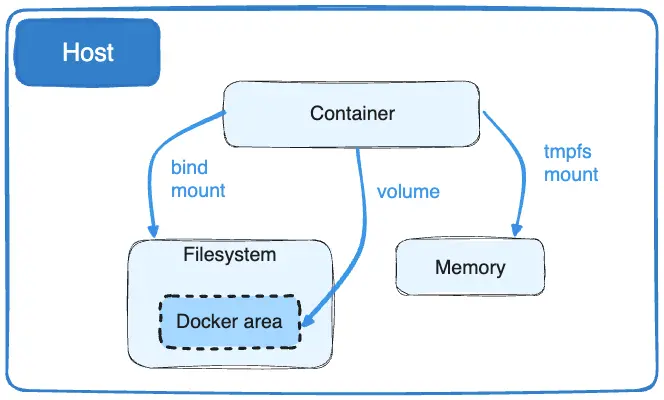

What is Docker:
- Is a tool that helps to create deploy and run applications in a containers.
- Docker is an open platform for developing, shipping, and running applications.
- Docker enables you to separate your applications from your infrastructure so you can deliver software quickly.
- With Docker, you can manage your infrastructure in the same ways you manage your applications.
- By taking advantage of Docker's methodologies for shipping, testing, and deploying code, you can significantly reduce the delay between writing code and running it in production.
- We can use docker for "Fast, consistent delivery of your applications", "Running more workloads on the same hardware"
What is container:
- Is a way to package applications with all required dependencies and configurations.
- A container is an isolated environment for your code.
- This means that a container has no knowledge of your operating system, or your files.
- It runs on the environment provided to you by Docker Desktop.
- Containers have everything that your code needs in order to run, down to a base operating system.
- You can use Docker Desktop to manage and explore your containers.
- Imagine how great it would be if a tool could start multiple containers with a single command. That tool is Docker Compose.
By default all files created inside a container are stored on a writable container layer. This means that:
- The data doesn't persist when that container no longer exists, and it can be difficult to get the data out of the container if another process needs it.
- A container's writable layer is tightly coupled to the host machine where the container is running. You can't easily move the data somewhere else.
- Writing into a container's writable layer requires a storage driver to manage the filesystem. The storage driver provides a union filesystem, using the Linux kernel. This extra abstraction reduces performance as compared to using data volumes, which write directly to the host filesystem.
- Docker isolates all content, code, and data in a container from your local filesystem. When you delete a container, Docker deletes all the content within that container.
- Sometimes, you may want to persist the data that a container generates. To do this, you can use volumes.

- The data doesn't persist when that container no longer exists, and it can be difficult to get the data out of the container if another process needs it.
- A container's writable layer is tightly coupled to the host machine where the container is running. You can't easily move the data somewhere else.
Storage Options:
- Docker has two options for containers to store files on the host machine, so that the files are persisted even after the container stops: volumes, and bind mounts.
- Docker also supports containers storing files in-memory on the host machine. Such files are not persisted. If you're running Docker on Linux, tmpfs mount is used to store files in the host's system memory.
tmpfs Mounts:
tmpfs mounts are temporary file systems stored in memory. Data stored in a tmpfs mount is ephemeral and doesn't persist across container restarts.
docker run -d --tmpfs /Mouli -it nginx bash |
Bind Mounts:
Bind mounts allow you to mount a file or directory from the host machine directly into the container. Changes made on either side are reflected on the other.
docker run -d -v $(pwd):/dev/demo -it nginx |
Named Mounts:
Unlike a bind mount, you can create and manage volumes outside the scope of any container.
docker volume create my-vol
docker volume ls
docker run -d \ --name devtest \ --mount source=my-vol,target=/app \ nginx:latest
docker volume rm my-vol |
- Docker isolates all content, code, and data in a container from your local filesystem. By default, containers can't access directories in your local filesystem.
Sometimes, you may want to access a directory from your local filesystem. To do this, you can use bind mounts.
- Containers can communicate with each other using container IP addresses or container names.
- Docker includes support for networking containers through the use of network drivers.
- By default, Docker provides two network drivers for you, the bridge and the overlay drivers.
- The network named bridge is a special network.Docker always launches your containers in this network.
docker network ls
docker network inspect bridge
Created new bridge network:
docker network create -d bridge my-net
docker run --network=my-net -itd --name=container3 busybox
|
- The following network drivers are available by default, and provide core networking functionality:
Driver | Description |
bridge | The default network driver. |
host | Remove network isolation between the container and the Docker host. |
none | Completely isolate a container from the host and other containers. |
overlay | Overlay networks connect multiple Docker daemons together. |
ipvlan | IPvlan networks provide full control over both IPv4 and IPv6 addressing. |
macvlan | Assign a MAC address to a container.
|
# Create dev bridge network
docker network create --driver bridge dev_network
# Create QA bridge network
docker network create --driver bridge qa_network
Network drivers overview
Create a service in Docker:
- A service is a declarative way to run a containerized application in a distributed and scalable manner.
- Docker services are primarily used in swarm mode, which is Docker's built-in orchestration feature for managing and scaling applications across multiple nodes.
docker service create --name my-web-app --replicas 3 -p 8080:80 nginx |